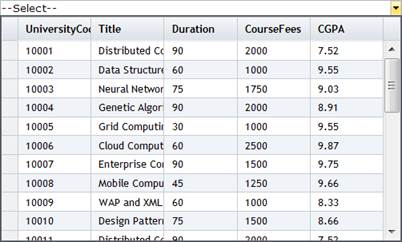

1. Create a model in the application (Refer to Getting Started>Adding a Model to the Application).
2. Create the MultiColumnDropdown control in the view.
|
View [ASPX]
<%=Html.Syncfusion().MultiColumnDropDown<Student>("Multidropdown",(MultiColumnDropDownModel) ViewData["dropdown"]) %> |
|
View [cshtml]
@(new HtmlString(Html.Syncfusion().MultiColumnDropDown<Student>("Multidropdown",(MultiColumnDropDownModel) ViewData["dropdown"]).ToString())) |
3. Create an instance to MultiColumnDropdownModel and assign a data source using the Datasource property.
|
// Create instance to MultiColumnDropDownModel and assign properties. MultiColumnDropDownModel dropdown = new MultiColumnDropDownModel() { Datasource = new StudentDataContext().JSONStudent.Skip(0).Take(30).ToList(), Text = "--Select--", Width = 500 }; |
4. Specify the display column indexes in array format using the DisplayExpression property.
|
// Create instance to MultiColumnDropDownModel and assign properties. MultiColumnDropDownModel dropdown = new MultiColumnDropDownModel() { Datasource = new StudentDataContext().JSONStudent.Skip(0).Take(30).ToList(), Text = "--Select--", DisplayExpression = new int[3] { 2, 3, 5 }, Width = 500, AutoFormat = Skins.Office2007Black }; |
5. Pass the model to the view using ViewData().
|
// Pass the MultiColumnDropDownModel to the view using ViewData(). ViewData["dropdown"] = dropdown; |
6. Run the application. The grid will appear as shown below.

Figure 304: Multicolumn Drop-Down